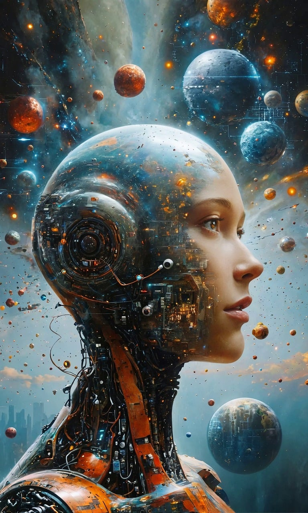
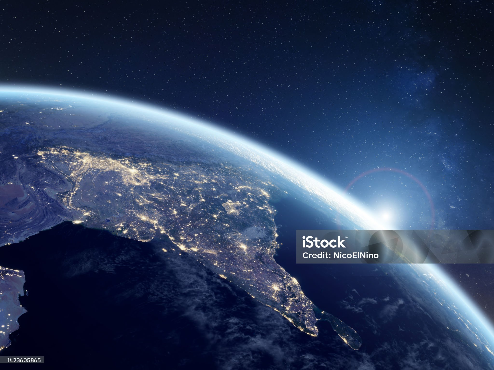

Projects
AI Powered Alchemy - Drug Discovery
Developed a pipeline using VAE and GAN for generating novel drug compounds. Implemented RNN and CNN for toxicity prediction.
GitHub LinkQuantum Quotient Analysis
Developed an interactive Streamlit app analyzing stock prices with indicators like MACD, RSI, and Bollinger Bands.
GitHub Link
Semantic Segmentation of Aerial Satellite Imagery
Implemented U-Net, DeepLab v3+, and Attention U-Net to segment satellite images into land, water, and vegetation.
GitHub LinkGraph Enhanced Contextual Search
Built a search engine for research papers using BERT embeddings and Neo4j Knowledge Graphs.
GitHub Link
YOLO-Based Real-Time Vehicle Detection and Classification
Built a system which supports real time monitoring, making it ideal for traffic surveillance and smart city applications.
GitHub Link
Satellite Image Chronology Prediction for Sequence Modeling
Leverages ConvLSTM, U-Net, and CAEs to predict the chronological sequence of satellite images for improved spatiotemporal feature extraction and high-quality image reconstruction.
GitHub Link